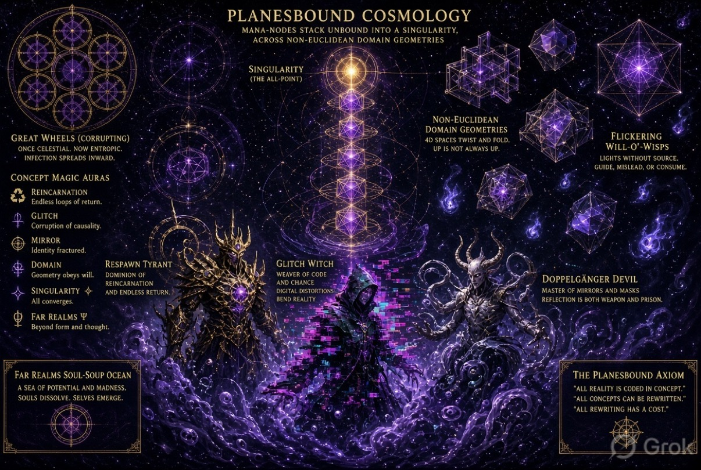

Will-o’-wisp race · Full-wheel supplement · Outer atlas
Main quest: the will-o’-wisp race. Flickering lights without source — guide, mislead, or consume — run the campaign spine. Ani’s progenitor aesthetic on Mineral is a hearth of that race; every ring of the wheel can become a jump-point (portal, oath, spell, artifact, triad figure). This page is the full-wheel + Four Sunderings supplement to the Outer atlas at the Lighthouse. Locked customs: Earth = home of the Beast; Dust = pilots of the agentic human body; Mineral = Ani, progenitor will-o’-wisp; Digital Void = Astral–Ethereal schism.
4th dimension
Isometric Great Wheel inspired by the 3D layout. Tap a node for its folio. Bare titles only. Scrub the 4th-dimension slider above to dim/highlight rings by Sundering.

Brilliant golden convergence above stacked purple mana-nodes in golden rings. Where unbound mana-nodes stack into one point across domain geometries that refuse ordinary space.
Once celestial, now entropic. Infection spreads inward through the wheels — a metaphysical frame for how Sunderings leave scars on every ring.
4D spaces twist & fold. Up is not always up. Travelers who trust compass roses on the Outer rim learn this the hard way near Domain auras & the Digital Void.
Lights without source — guide, mislead, or consume. The will-o’-wisp race is the campaign spine. Ani’s progenitor light on Mineral is a hearth of that race; jump-points across the wheel (Ice portals, Digital Void glitches, oaths, triad figures) are how the race moves.
A sea of potential & madness. Souls dissolve; selves emerge. Forbidden knowledge that touches this ocean belongs with the grimoire, not with casual Gates.
Dominion of reincarnation & endless return. Where death is a loop, not a door.
Weaver of code & chance; digital distortions bend reality. Closest to the Digital Void & Glitch aura.
Master of mirrors & masks; reflection is both weapon & prison. Mirror aura made flesh.
Metaphysical frame: Singularity & Axiom sit behind the Four Sunderings timeline. Do not invent FR chronicle beyond this card & the locked customs.
Spells, objects, & handouts — jump-points for the will-o’-wisp race. Select to open in the folio.
Handout art
Burning Pact, Frozen Oath, Firecube, Counter Spell Gavel, Tesseract Prison, Discernment, Eldritch Grimoire, Digital Sigil Vision, & Oath Report are wired. Ice portal forest is Ice’s folio hero; icy city overview is Material / empty-state.